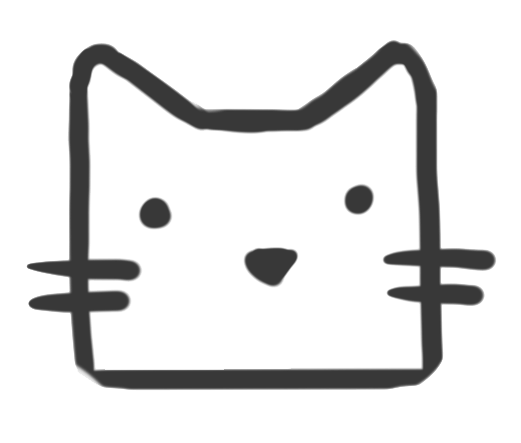

<nav class="nav-bar">
    <a [routerLink]="['']">
        
    </a>
    <div class="nav-bar-btns">
        <a [routerLink]="['']">
            <button mat-flat-button class="add-button">Browse cats</button>
        </a>
        <a [routerLink]="['cats/create']">
            <button mat-raised-button class="add-button">Add a new cat</button>
        </a>
    </div>
</nav>